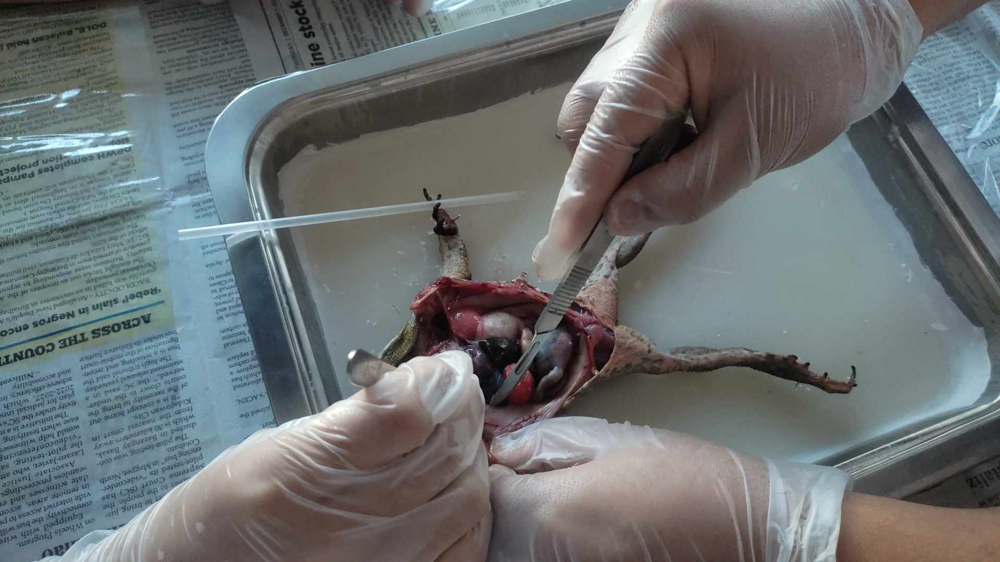
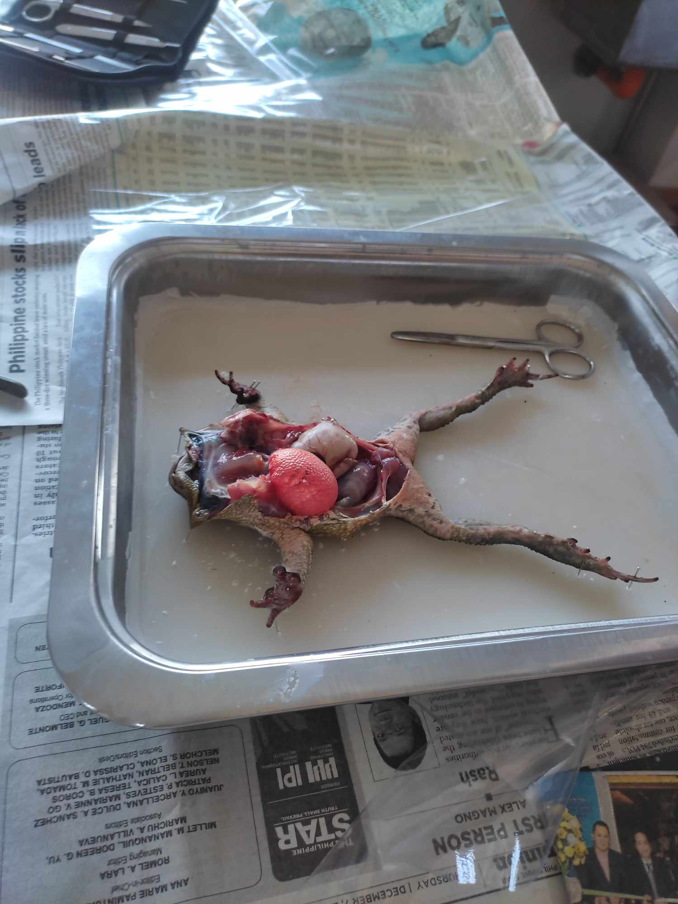
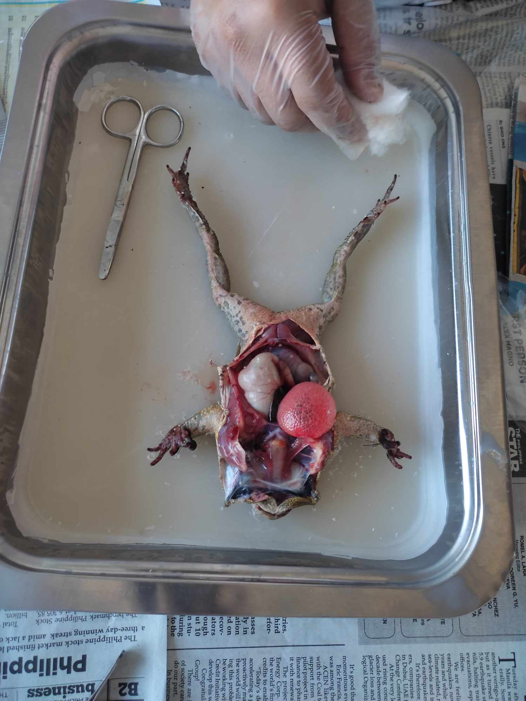
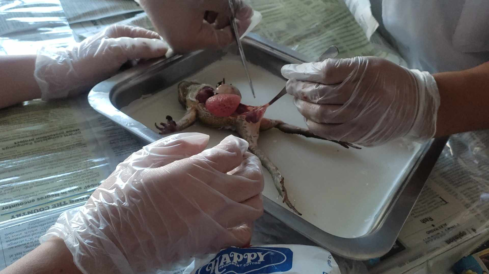

LABORATORY ACTIVITY DISSECTION OF FROG
LABORATORY IMAGES




Materials
dissecting kit
dissecting pan
face mask
live frog
newspaper
plastic cover
pins with organ labels
safety goggles
surgical gloves
PROCEDURE
Put on safety goggles, gloves, and a laboratory gown.
Place a frog on a dissection tray. To determine the frog’s sex, look at the hand digits or fingers, on its forelegs. A male frog usually has thick pads on its “thumbs,” which is one external difference between the sexes, as shown in the Figure 1 below. Male frogs are also usually smaller than female frogs. Observe several frogs to see the difference between males and females.
Using the Figure 2, locate and identify the external features of the head. Find the mouth, external nares, tympani, eyes, and nictating membranes.
Turn the frog on its back and pin down the legs. Cut the hinges of the mount and open it wide. Using the Figure 3, locate and identify the structures inside the mouth. Use a probe to help find each part: the vomerine teeth, the maxillary teeth, the internal nares, the tongue, the openings to the Eustachian tubes, the esophagus, the pharynx, and the slit-like glottis.
Look for the opening to the frog’s cloaca, located between the hind legs. Use forceps to lift the skin and use scissors to cut along the center of the body from the cloaca to the lip. Turn back the skin, cut toward the side at each leg, and pin the skin flat. Figure 4 shows how to make these cuts.
Lift and cut through the muscles and breast bone to open up the body cavity. If your frog is a female, the abdominal cavity may be filled with dark-colored eggs. If so, remove the eggs on one side so you can see the organs underlying them.
Using the Figure 5, locate and identify the organs of the digestive system: esophagus, stomach, small intestine, large intestine, gallbladder, liver, spleen, pancreas, and cloaca.
Using the Figure 6, identify the parts of the circulatory and respiratory systems that are in the chest cavity. Find the left atrium, right atrium, and ventricle of the heart. Find an artery attached to the heart and another artery near the backbone. Find a vein near one of the shoulders. Find the two lungs.
Use a probe and scissors to lift and remove the intestines and liver. Use the diagram on the next page to identify the parts of the urinary and reproductive systems. Remove the peritoneal membrane, which is connective tissue that lies on top of the red kidneys. Observe the yellow fat bodies that are attached to the kidneys. Find the ureters, urinary bladder, testes and sperm ducts of male frogs, and the ovaries, oviducts and uteri of female frogs.
Dispose of your materials according to the directions from your teacher.
Clean up your work area and wash your hands before leaving the lab.